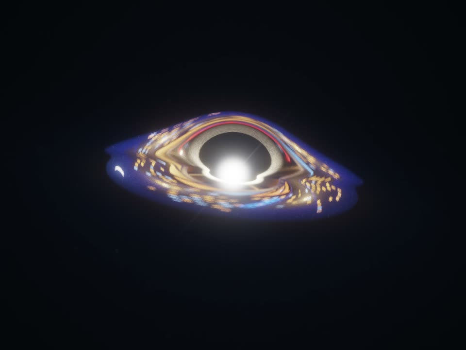
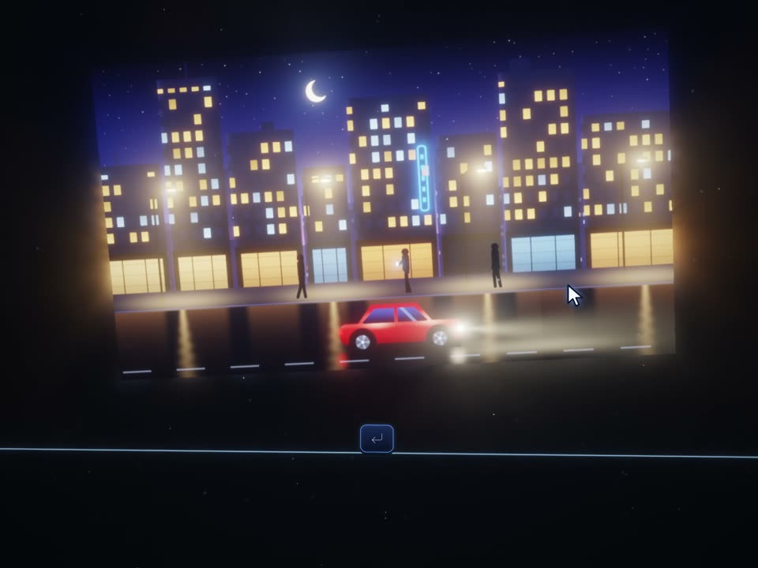
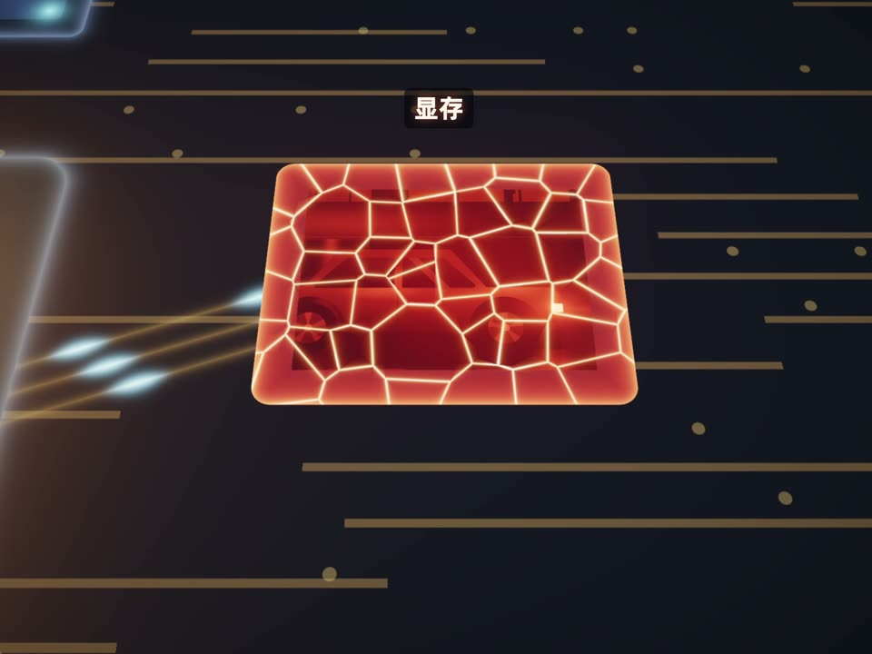
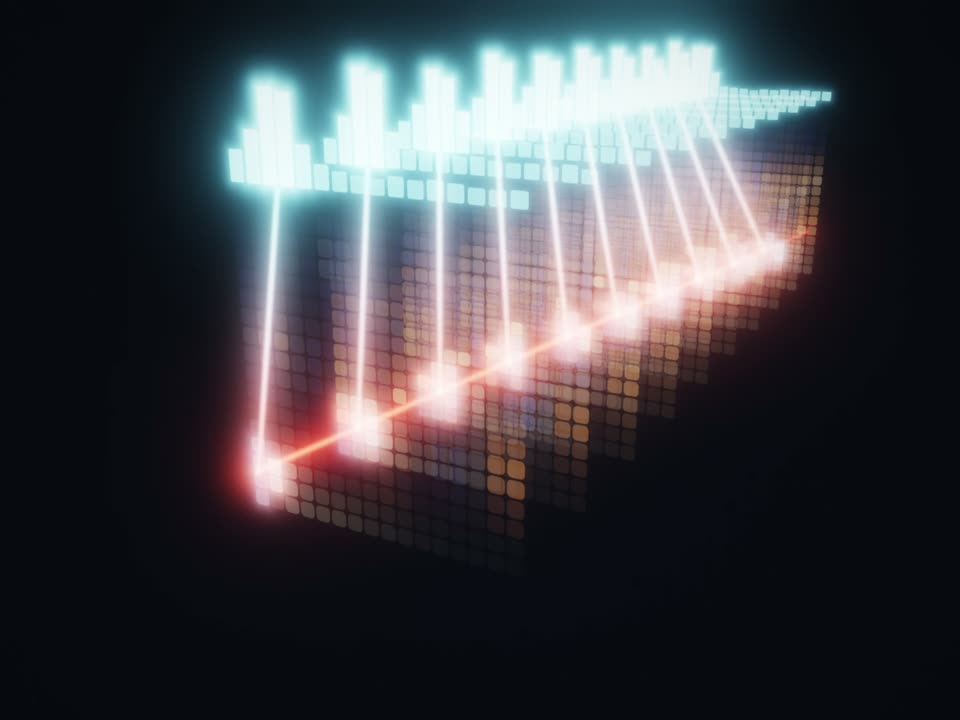
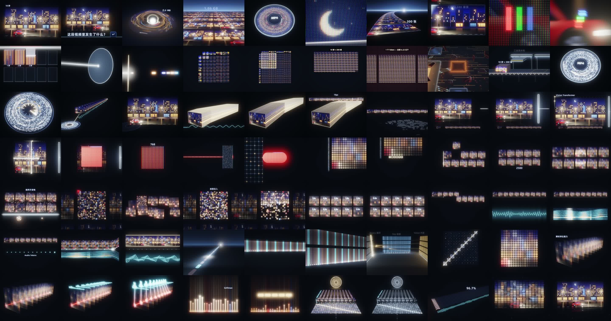

录口播、补克隆音

- 我用大疆麦录了一条 13 分钟的原始口播
- 英文词我先念成「单词」占位，读错的短句没重录；AI 用我的声音零样本克隆补了 18 处
- 人声套我定的 B6 混音链
成片《模型是如何看视频的？》，6 分 58 秒，4:3，全片没有人脸。我录口播、剪气口、看片挑毛病、拍板；画面、配乐、音效、克隆音、字幕、导出，都是 AI 动的手。它自己写了一个 3D 渲染器，片子里那段红车夜街视频也是它用代码画的。

按对话记录和工程的提交记录排出来。中间两天，AI 大部分时间在我睡觉或者没看的时候跑。



口播前有 1.5 秒开场。开头 40 秒单独做、单独定稿；后面切成 10 段，每段一个 agent 画，段与段之间靠一张「接力画面」交棒，前后两段在这几帧画的是同一张图，逐像素一致。
悬停或聚焦色块可以看名字和时间。克隆音位置取自克隆音贴原声脚本里的位置表；「后来改的画面」是段落做完以后，按我的意见单独重做再盖上去的三处。
每个阶段写 AI 做了什么、做了多少，以及我在哪一步说了话。
录音里的英文词我先念成「单词」占位，有几句读错也没重录。AI 用这段录音当参考，零样本克隆我的声音，只补那几个词所在的句子，18 处合计约 2 分钟；我耳听 18 条，全部通过。我剪完气口，AI 把剪前剪后逐段比对：删了 68 处、52 秒，大部分是气口，但有 14 处带字，最长一整句 9.7 秒（「然而，进入注意力层之前……排列不变性」）。我确认是误删，它全部补回、染成橙色，重出混音和句子时间表。
每一轮都是 Claude Code 复制几份独立工程、同时派几个 claude -p 各做一版，做完自己抽帧看过再给我。10-12 三个档位各一版，我挑了一版说改成 3D，再加一个 high 的 3D 版，看完「都不太行」。10-13 我让它参考其他科普博主的动效，又跑 high、xhigh 两版和一版融合，我还是说不行，重做。
| 轮 | 版本 | 用时 | 花费 | 看图 | 结果 |
|---|---|---|---|---|---|
| 10-12 | medium（后续跑改 3D） | 21.0 + 11.4 分 | $5.42 | 14 | 不行 |
| 10-12 | high | 27.4 分 | $4.38 | 15 | 不行 |
| 10-12 | xhigh | 45.5 分 | $10.86 | 29 | 不行 |
| 10-12 | high · 3D 版 | 26.2 分 | $7.15 | 21 | 都不太行 |
| 10-13 | high · 参考版 | 16.9 分 | $4.36 | 33 | — |
| 10-13 | xhigh · 参考版 | 37.7 分 | $9.87 | 33 | — |
| 10-13 | high · 两版融合 | 16.3 分 | $4.80 | 12 | 不行，重新做 |
7 个 claude -p 合计 $46.84。「看图」= 它打开自己渲出来的静帧和接触表检查的次数。用时、花费取自每次运行的结果记录；10-12 那四个沙盒已删，数字是当时 Claude Code 读出来的。续跑记录的是累计花费。
我说重做之后，Claude Code 不再一版一版试，而是开了一个工作流：5 个 agent 各做一个完全不同的方向，做完 3 个评委 agent 分别按「震不震撼 / 看不看得懂 / 做工」打分。评委把「一根光线」排第一、「光的宇宙」第二；Claude Code 自己再看两版的静帧，选了「光的宇宙」当底版。接着两个 agent 在同一底版上做两种「解开」的爆法，三个评委二选一；赢的那版再拆成 α β γ δ 四路同时修，合并、两个质检 agent 只查不改、最后打磨。配乐同时在做：调用 Lyria 48 次，成功 43 条，从里面剪出三段拼起来。
第二天 10:54 我看完：「我完全认可，太厉害了。」开头 40 秒定稿，这套「光的宇宙」写进工程说明，后面 10 段都在这个世界里接着演。
开头认可后，Claude Code 把剩下 6 分多钟按句子之间的停顿切成 10 段，写好每段从哪张接力画面进、到哪张出，然后 10 个 agent 各画一段、1 个 agent 做全片配乐，同时开跑，58 分钟全部交回。合成整片自己看完，再派一轮：10 个 agent 各修自己那段、1 个 agent 铺全片音效，又是 58 分钟。开跑前我说开头蓝紫色有点多，它连换配色一起派了一批；2 分钟后我说「还是之前那个颜色吧」，它停掉这批、按原色重跑。
下午我看完说「知识可视化不够」，它又开一个工作流重做第 2 段、第 8 段（另派一个 agent 备真实数据），每段一个评委审过、按意见再修，才给我。我看了说「还不如上一版」，它退回上一版。
我说现在的画面缺一个「现实锚点」。Claude Code 派了三个档位的 claude -p 各出一个方向，我挑了 high 那版；它判断最好的锚点就是观众已经认识的那段红车视频本身：Token 是从它身上切下来的块，6.22 亿就是它的 300 帧铺满一面墙。挑中后这个 -p 续跑两轮修；之后我提「从 1 分 17 秒那里直接穿出去，是一张正在运作的显卡，然后显存爆炸」，它先和我对齐，再续跑两轮。半夜我再列了几处看不懂的地方，它开 4 个 claude -p 各改一处，再派一个只查不改的去排查全片哪里「接得割裂」。
| 沙盒 | 做什么 | 调用 | 花费 | 看图 |
|---|---|---|---|---|
| 锚点 · medium | 出一个方向 | 1 | $1.53 | 4 |
| 锚点 · high 挑中 | 出方向 → 两轮修 → 拉出去是一张显卡 → 显卡要实、崩溃要大 | 5 | $15.54 | 45 |
| 锚点 · xhigh | 出一个方向 | 1 | $3.27 | 7 |
| 第五轮 · 对话框 | 开头「拖进对话框」 | 1 | $2.88 | 13 |
| 第五轮 · 流水线 | 工业流水线：传送带上的视频砖 | 2 | $6.42 | 24 |
| 第五轮 · 速率 | 1.49 Gbps：把「一秒」演出来 | 2 | $4.32 | 16 |
| 第五轮 · 语言模型 | 「并不能直接输入语言模型」 | 2 | $5.08 | 19 |
| 接缝排查 | 只查不改：全片哪里接得割裂 | 1 | $2.89 | 11 |
8 个 claude -p，15 次调用（含续跑），合计 $41.93。排查结论：10 个段界逐像素无缝，割裂全在后来盖上去的地方，而且配乐没跟着画面改。
01:34 我发了一条：对整条片做质检和优化，看观众能不能懂、画面精不精美、音效配乐合不合适，限时 6 小时。Claude Code 先渲一版整片（r0），请 Gemini 3.1 Pro 当普通观众和混音师各看一遍、逐段打分；再派 agent 分头查画面、评人声、修 QKV 那段、重做配乐和音效；改完再渲 r1、r2、r3，逐帧比对前后两版有没有引入新的跳帧，最后 3 个 agent 分三截复查全片画面、1 个复查声音。04:51 收工。
质检抓到的一处必修：结尾那句「一辆红色汽车向右行驶」往下掉，穿过字幕带，和字幕叠成乱码。见下面「前后对照」最后一组。
我听出克隆音「有点发蒙」。AI 把克隆的那些段和旁边的原声对比：音高差 0.6 个半音以上的变调、按频谱补 EQ、响度对齐、垫上原声的房间底噪，原声一个采样没动；配乐音效只在克隆段按新人声重算避让。我说字体不对，它查出画面里几处刻字渲染时没等普惠体加载完、退回了衬线体，修好；字幕字号对照我以前达芬奇成片，改成字高 = 画高 5%；我核文案时发现 3:37 那句「258 个 Visual Token」没上字幕，补上。Remotion 直出 H.265 2880×2160，399 MB，-14.8 LUFS。AI 用系统文件对话框塞进视频和横封面；标题、简介、话题和竖封面是我自己改的，发布键我点。
渲染次数按三层 AI 跑过的命令条数数，含低清预览和分段渲染。代码行数是成片工程 src/ 下 76 个文件之和。
从成片里每段截一小截，循环播放、静音。全部是代码逐帧画的，没有一张素材图。
左边是 10-14 中午 10 段第一次拼成整片时的低清预览（576×432），右边是成片同一时刻。中间隔着的，是我说的那几句话和后面三个阶段。

114 条消息里，很多是「做吧」「咋样」「好了叫我」。真正改变了片子的是下面这些。
这些都是误删，全部补回去，然后补回去之后，把这些片段全部进行染色。14 处补回、染橙，重出混音 v4。
都不太行，都不太行。开头第一轮 4 版全否，只留工程底版。
我觉得不行，重新做吧。不再一版版试，一夜开 5 个方向。
我完全认可，太厉害了。开头 40 秒定稿。
动画的知识可视化不够……从平面到背后的原理的状态，对应的可视化应该是什么样子的呢？第 2、8 段又开工作流重做一版，我看完觉得不如上一版，退回。
我感觉还不如上一版呢……你恢复到上一版吧。按 git 记录退回。
我觉得现在画面是缺少一个锚点，让观众对里面的内容有一个现实锚点。三档 -p 出方向：拿红车视频本身当尺子。
直接从那里一下子穿梭到一张显卡的外面，展示它是一张正在运作的显卡……然后显存爆炸。你先和我对齐啊，和我讨论，不要直接做。对齐后续跑三轮，显存崩溃变成一张真显卡。
虽然各个分段都没问题，但单独去细改某一段的时候，和上下经常融合得很差。派一个只查不改的 -p 排查全片接缝，配乐按新画面重排。
我感觉克隆音的问题是，有点发蒙。克隆段贴原声：变调、补 EQ、垫底噪。
这字体有点不对啊，你用的是黑体吗？画面刻字等普惠体加载完再画；字幕字号对齐以前的成片。
「最终生成约 258 个 Visual Token」，这个没有……这个加上去然后重新导出。其他的别动。补 3 条字幕，只动这一处。
前三轮 7 个 claude -p 都在同一个思路里打转。换成一夜 5 个方向并排做、评委先筛一遍，第二天早上我只用看一版，一看就认可。
10 段分开做时，Claude Code 一开始就让每两段在交接处画同一张图，段界逐像素无缝。可后来单独改某一段、盖上去的地方，还是和上下接得割裂，声音尤其明显。最后专门派一个只查不改的去量接缝，配乐跟着新画面重排。
6.22 亿、3.87×10¹⁷，念出来没感觉。拿观众已经认识的那段红车视频当尺子，再落到一张会炸的显卡上，这个数才有了重量。
全片没有人脸，也没有素材库。Claude Code 在 Remotion 工程里自己写了一个 WebGL2 渲染器（带泛光和色调映射），片子里那段红车夜街视频也是代码生成的，300 帧里任意一帧的任意一个像素都能算出来。每一帧只由帧号决定，同一帧渲两遍完全一样。工程最后约 15,850 行代码，其中着色器约 1,811 行。
我录口播、在达芬奇里剪气口、看片挑毛病、拍板，最后自己写抖音标题简介、点发布，5 天里发了 114 条消息。其余是 AI：Claude Code 在 6 段对话里动手 1,588 次；它派出 85 个子 agent，动手 7,314 次；另跑了 15 个 claude -p，动手 890 次。
大部分是。录音时英文词我先念成「单词」占位、读错的短句没重录，AI 用我声音的零样本克隆补了 18 处，合计约 2 分钟，再按原声变调、补 EQ、垫房间底噪，让它和原声接得上。配乐和音效全部由 Lyria 生成，没用素材包。
前三轮（三个档位各一版、一个 3D 版、参考其他博主的两版和融合版）我都说不行。第四次 Claude Code 一夜同时做 5 个方向，评委打分，它再选底版、做两版对比、四路修、合并、质检，第二天上午交出来，我一看就认可了。
凌晨质检时，Claude Code 把整片发给 Gemini 3.1 Pro，让它扮普通观众和混音师各看一遍、逐段打分挑刺，一共 8 份报告。它反复提到的问题，比如 QKV 那段看不懂、音效该有却没有，后面都派了 agent 去改。
15 个 claude -p 按 API 价格折算约 $88.77：开头前三轮 $46.84，现实锚点和第五轮 $39.04，接缝排查 $2.89。85 个子 agent 和 Claude Code 主对话的花费没有记录，算不出来。